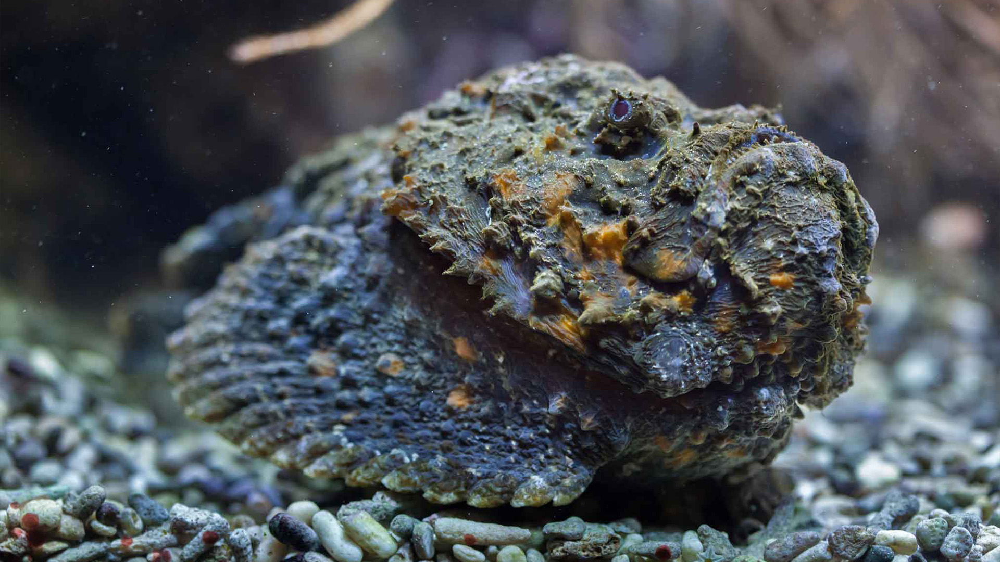
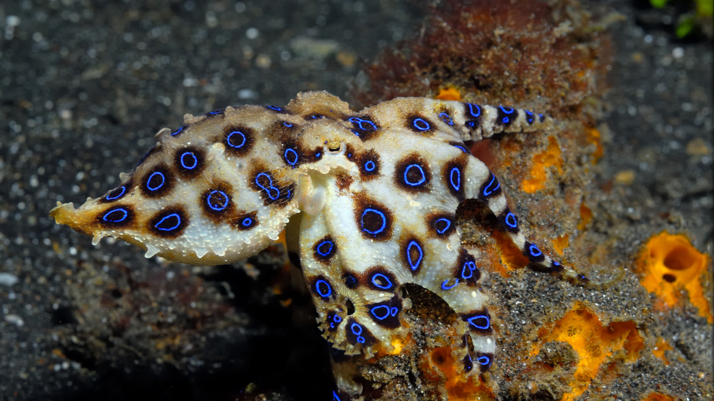
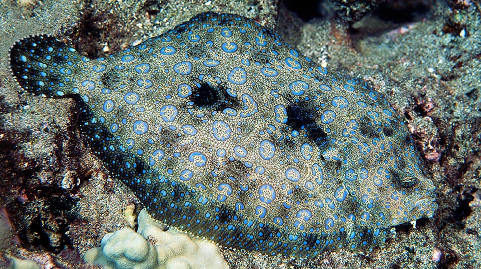

Pulpo mimo o imitador

Orca

Tiburón alfombra manchado

Dragón de mar

Caballito de mar pigmeo de Bargibant

Pez piedra

Cangrejo decorador

Pulpo de anillos azules

Pez león

Pez cirujano imitador

Lenguado pavo real